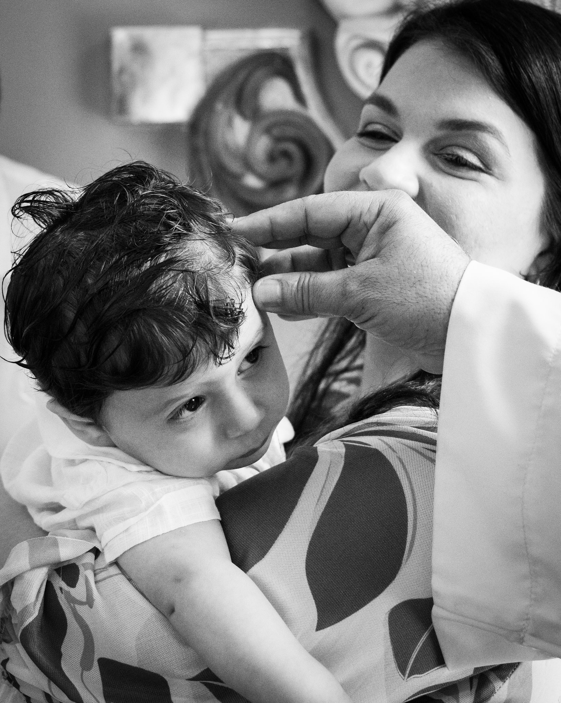
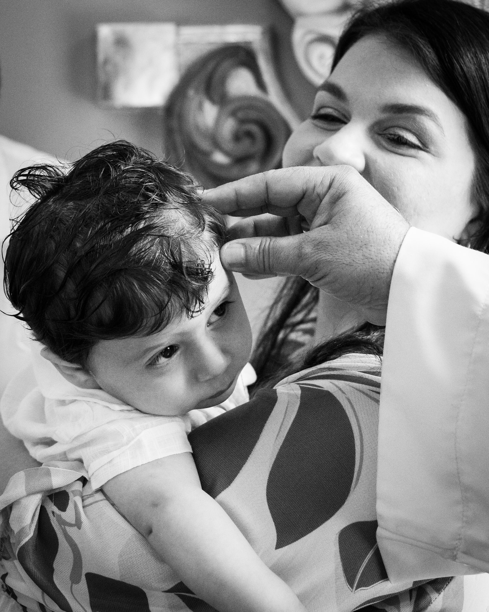
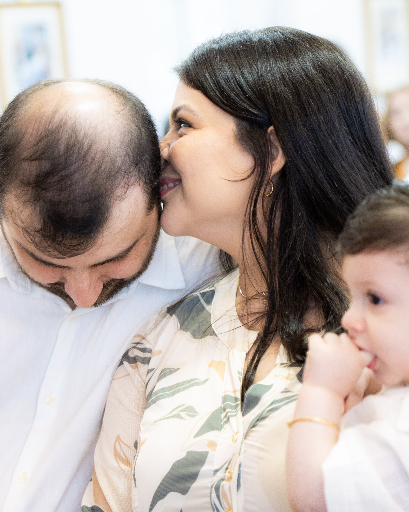
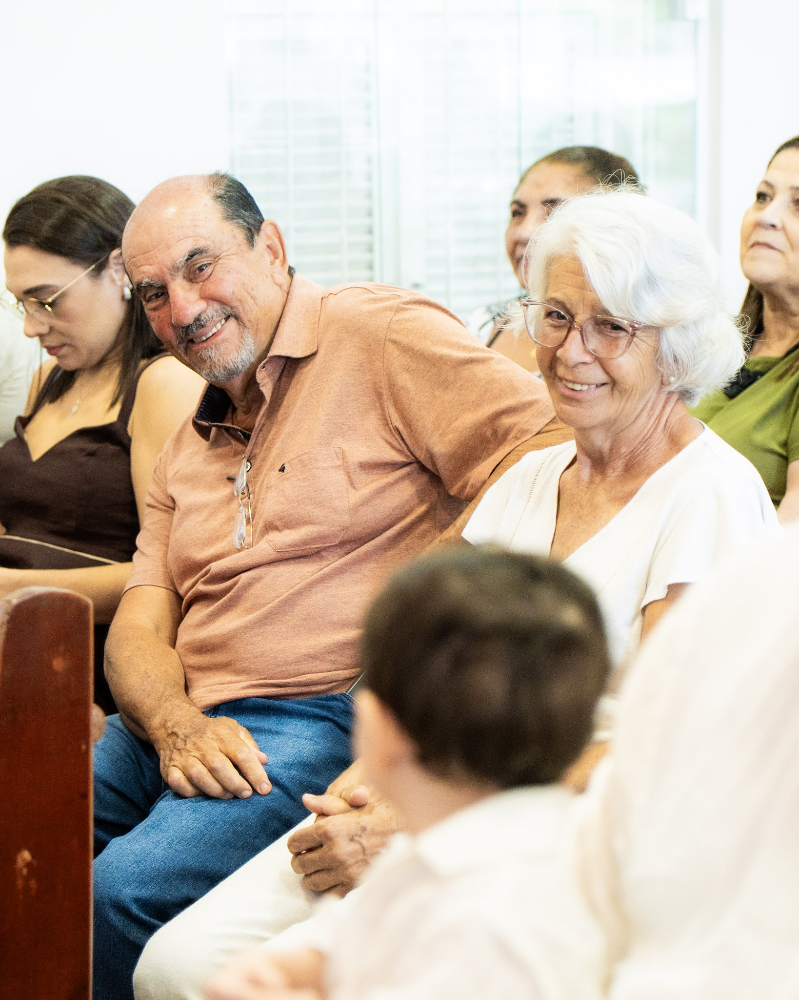
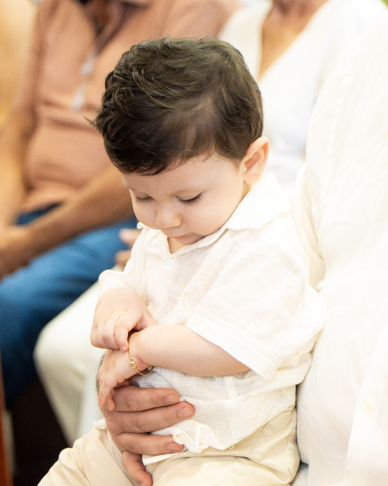
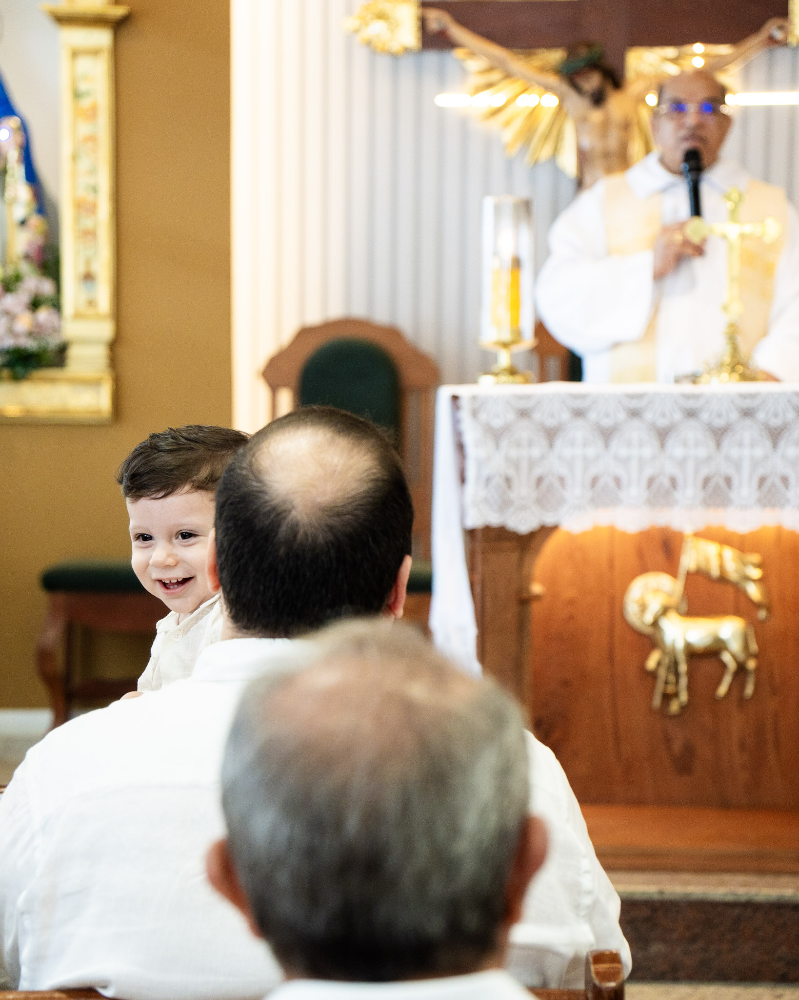
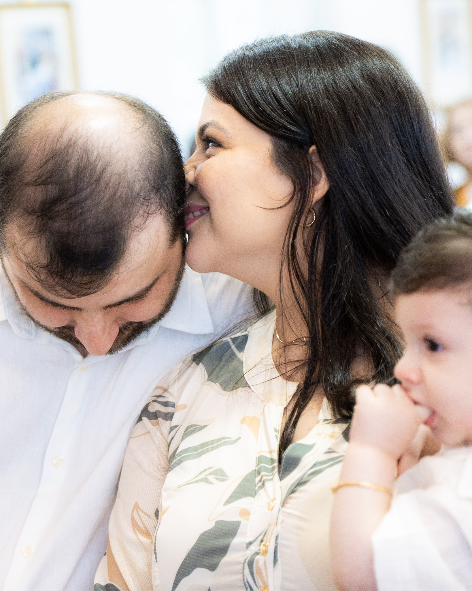
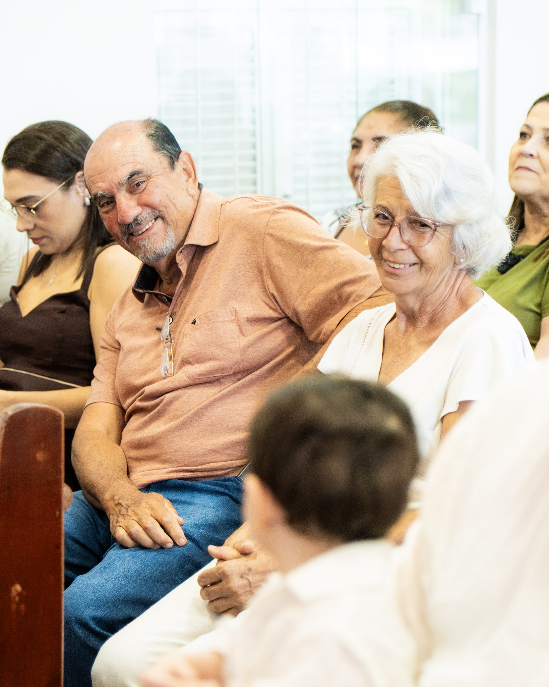
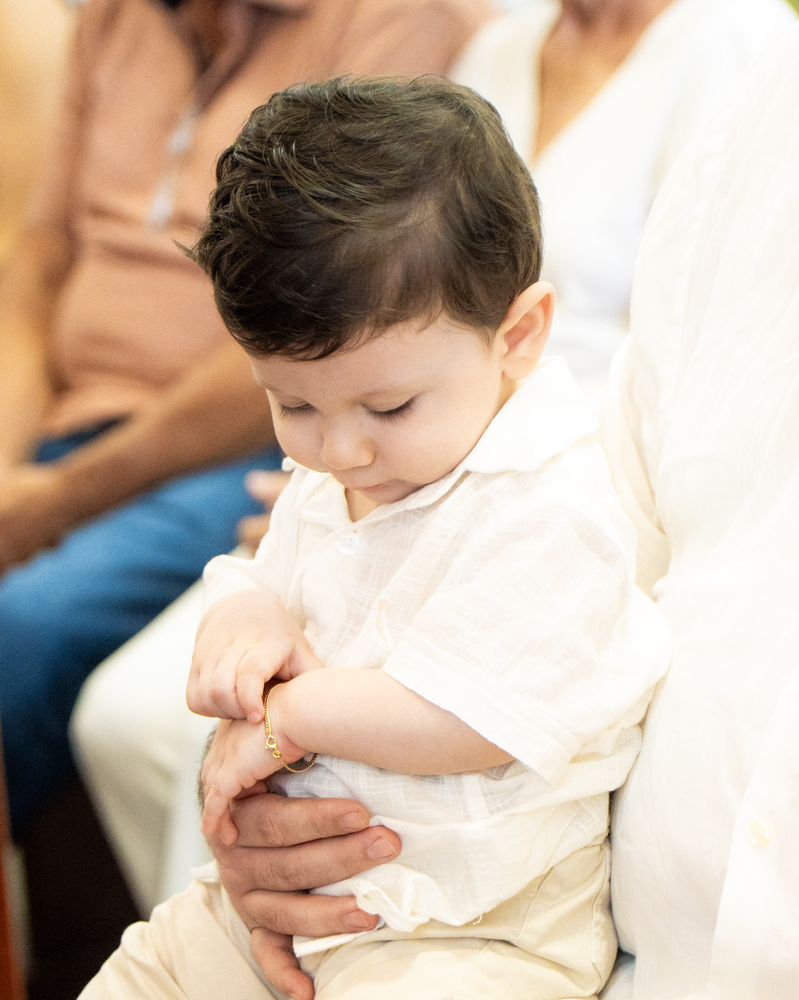
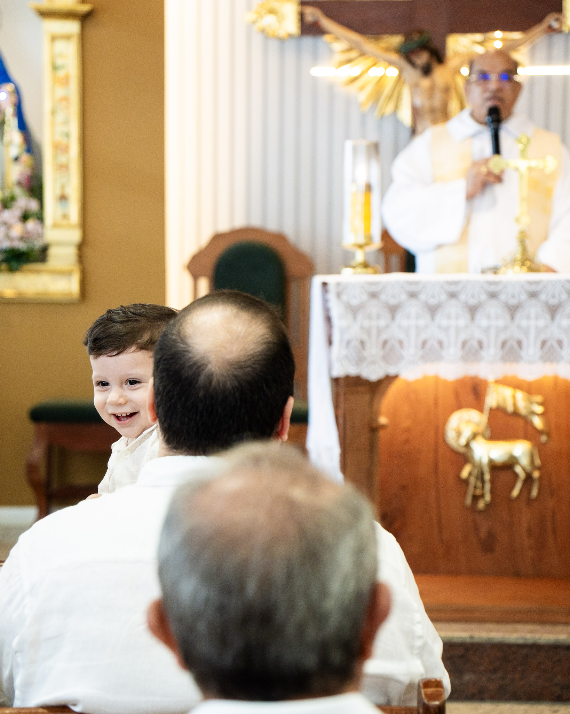

batizado | thomas
O batizado do pequeno Thomas aconteceu em Fortaleza, em uma manhã cheia de fé, amor e emoção. Foi um momento único, cercado de carinho e significado, onde cada detalhe demonstrava a importância dessa celebração na vida da família.
Para a INTS Fotografia, foi uma honra e uma imensa alegria poder participar desse dia tão especial. Nosso trabalho vai muito além dos registros: é sobre eternizar sentimentos, memórias e conexões que merecem ser lembradas para sempre.
Ao olhar para os pais do Thomas, era nítido o brilho de orgulho e felicidade estampado em seus rostos. Esses instantes, cheios de verdade e emoção, são o que nos motivam diariamente e fazem todo o nosso trabalho valer a pena.
Desejamos ao pequeno Thomas uma vida abençoada, repleta de saúde, amor e realizações. E aos seus pais, muita felicidade nesta nova fase da família. A INTS se sente grata e feliz por ter tido a oportunidade de registrar e guardar para sempre memórias tão preciosas.
 

 






